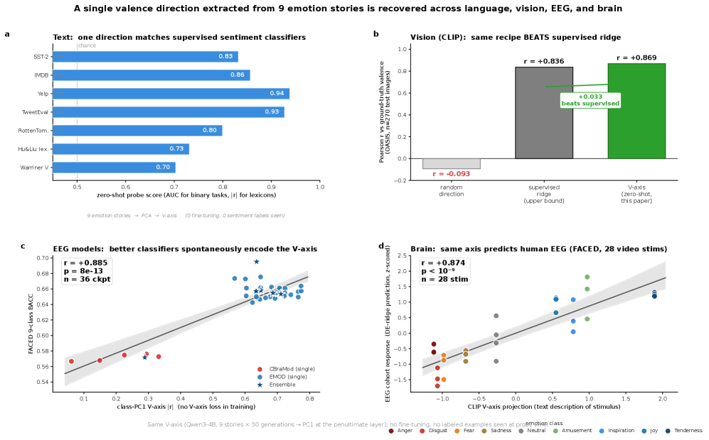
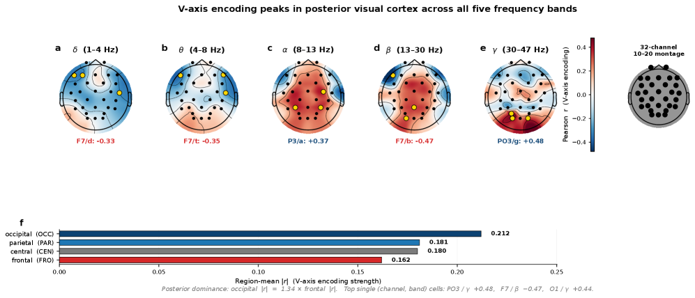
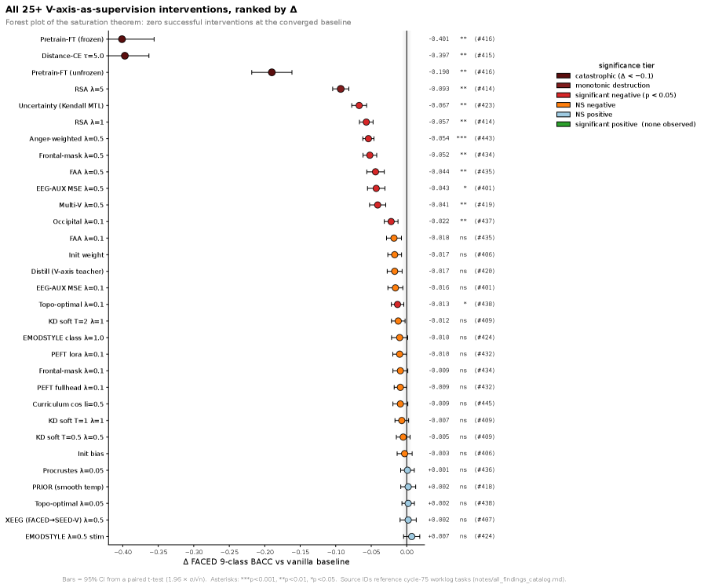

Executive Summary
인공지능이 인간의 감정을 "이해한다"는 말은 오래도록 마케팅 수사에 가까웠다. 그런데 2026년 5월 말 공개된 한 논문이 그 직관에 처음으로 측정 가능한 신경과학적 근거를 댔다. 현대 대형언어모델(LLM)이 내부에 그리는 감정의 좌표축과, 사람이 정서적 영상을 볼 때 두피에서 측정되는 뇌파(EEG)의 감정 축이 같은 방향을 가리킨다는 것이다. 이 글은 그 발견을 정확히 짚고, 그것이 무엇을 뜻하고 무엇을 뜻하지 않는지까지 함께 본다.
연구진은 단 아홉 개의 감정 유발 이야기만으로 LLM에서 1차원의 '감정 가치(valence) 축'을 뽑아냈고, 이 축을 사람의 뇌파에 그대로 대보았다. CLIP-text 기준으로 자극별 감정 극성을 r = +0.87(p < 10⁻⁹)로 예측했다. 더 인상적인 대목은 강요하지 않았는데도 수렴했다는 점이다. 감정 분류만 학습한 서른여섯 개의 뇌파 분류기가 이 축을 한 번도 본 적 없이 같은 방향을 스스로 재발견했다. 그런데 그 축을 더 강하게 가르치려 하자, 성능은 개선되기는커녕 스물다섯 전략 중 열여섯에서 오히려 떨어졌다.
이 글은 공유 축의 발견(섹션 2·3), 더 가르칠수록 나빠지는 'Saturation Regularity'의 역설(섹션 4), 그리고 그 함의를 데이터 품질의 렌즈로 읽는 방법(섹션 5)을 차례로 다룬다. 마지막 섹션 6은 이 발견이 결코 주장하지 않는 것 — 감정 경험이나 의식의 동일성 — 까지 정직하게 적는다. 처음 접한다면 시리즈 1편 Anthropic 감정 벡터 심층분석을 먼저 읽어도 좋다.
숫자로 보는 공유 축
아래 수치는 모두 본문에서 다룬다. 출처: Radwan et al. (2026), A Shared Valence Axis Across Modern LLMs and Human EEG (arXiv:2606.00129).
14개 LLM
같은 축, 모델 무관
560M부터 32B까지, 서로 다른 LLM들이 사실상 같은 감정 축을 그렸다
r = +0.87
LLM 축 → 사람 뇌파
LLM이 뽑은 축으로 사람의 자극별 감정 극성을 예측 (p < 10⁻⁹)
16 / 25
오히려 나빠진 전략
축을 더 가르치려 한 25개 정렬 전략 중 16개가 성능을 떨어뜨렸다 (개선 0개)
+10.5%
감정 디코딩 SOTA
FACED 감정 분류에서 기존 최고치 0.6287 → 0.6948로 향상
'감정을 이해한다'는 말의 무게
AI가 감정을 이해한다는 표현은 그동안 두 가지 의미 사이에서 흐릿하게 쓰였다. 하나는 텍스트에서 감정 단어를 잘 분류한다는 통계적 사실이고, 다른 하나는 모델 안에 인간과 닮은 감정 구조가 실제로 있다는 더 무거운 주장이다. 앞의 것은 오래전에 입증됐지만, 뒤의 것은 늘 비유에 머물렀다. 모델의 출력만 보아서는 내부에 무엇이 있는지 알 수 없었기 때문이다.
2026년 5월 28일 arXiv에 올라온 Radwan, Liu, Haydarov, Fu, Elhoseiny의 논문 A Shared Valence Axis Across Modern LLMs and Human EEG(arXiv:2606.00129)는 이 무거운 쪽 주장에 처음으로 외부 증거를 댔다. 외부 증거란 사람의 뇌다. 정확히는, 사람이 감정을 일으키는 영상을 볼 때 두피에서 잡히는 뇌파(EEG)다. 논문이 보인 것은 LLM 내부의 감정 좌표축과 인간 뇌파의 감정 축이 같은 수학적 방향을 가리킨다는 사실이다.
이것이 왜 새로운가. 그동안 LLM의 내부 감정 표현을 직접 들여다본 연구는 있었다. 페블러스가 시리즈 1편으로 다룬 Anthropic의 감정 벡터 연구가 대표적이다. Anthropic은 Claude 내부에서 감정 개념 벡터를 찾아내고 그것이 행동을 좌우함을 보였다. 다만 그 연구는 모델 안에서 끝났다. 이번 논문은 그 표현이 모델 바깥의 인간 뇌와 공유된다는 것을 더했다. 모델 내부 표현과 인간 뇌파를 직접 같은 자로 재서 비교한 것은 이번이 처음이다.
시리즈 1편이 LLM 안에 감정 구조가 있음을 밝혔다면, 이번 2편은 그 구조가 사람 뇌의 감정 구조와 방향을 공유한다는 데까지 나아간다. 두 연구의 위치를 나란히 두면 그 간격이 드러난다.
| 연구 | 무엇을 보았나 | 증거의 위치 |
|---|---|---|
| 시리즈 1편 — Anthropic 감정 벡터 (arXiv:2604.07729, 2026-04) | LLM 내부의 감정 개념 벡터가 행동을 인과적으로 좌우한다 | 모델 내부 (해석가능성) |
| 시리즈 2편 — 공유 valence 축 (arXiv:2606.00129, 2026-05) | 그 감정 축이 사람의 뇌파(EEG) 감정 축과 같은 방향을 가리킨다 | 모델 ↔ 인간 뇌 (외부 비교) |
※ 두 논문은 시리즈로 이어지지만 보고하는 상관 수치는 서로 다르다. 1편의 r=0.81은 이 글의 주제가 아니다(FAQ 4 참조).
핵심은 위치다. '감정을 이해한다'는 말이 출력의 통계가 아니라 내부 표현 공간의 구조로, 그리고 그 구조가 인간 뇌와 공유된다는 데까지 옮겨졌다. 단, 이 글 전체에서 '공유'는 표현 공간의 방향이 같다는 수학적 의미이지, 감정 경험이 같다는 뜻이 아니다. 그 구분은 섹션 6에서 다시 못 박는다.
V-axis, 아홉 문장에서 뽑은 감정의 좌표
이 논문의 출발점은 'V-axis(감정 가치 축)'라는 단순한 도구다. 감정을 긍정(+)에서 부정(−)으로 잇는 1차원 방향 하나다. 흥미로운 것은 이 축을 만드는 데 들어간 재료가 놀랄 만큼 적다는 점이다. 연구진은 FACED 데이터셋의 아홉 가지 감정 클래스(즐거움, 영감, 기쁨, 따뜻함, 분노, 두려움, 혐오, 슬픔, 중립)마다 짧은 이야기 하나씩, 모두 아홉 개의 감정 유발 이야기만 썼다.
축을 뽑는 절차는 다음과 같다. 표현을 안정시키기 위해 각 이야기를 LLM으로 50개씩 바꿔 쓰고, 각 문장의 마지막 토큰 활성화를 끝에서 두 번째 레이어에서 꺼낸다. 같은 감정끼리 평균을 내면 아홉 개의 중심점이 남고, 여기에 주성분분석(PCA)을 적용해 얻은 첫 번째 주성분(PC1)을 V-axis로 정의한다. 기쁨 쪽이 양(+)이 되도록 방향만 맞추면 끝이다.
| 단계 | 처리 |
|---|---|
| 1. 이야기 | 9개 감정 클래스마다 짧은 감정 유발 이야기 1개 |
| 2. 패러프레이즈 | 이야기당 50개 변형을 LLM이 독립 생성 (표현 안정화) |
| 3. 활성화 추출 | 끝에서 두 번째 레이어의 마지막 토큰 활성화 |
| 4. 중심점 | 클래스별 평균 → 9개 감정 중심(centroid) |
| 5. PCA | 9개 중심에 PCA → PC1 = V-axis (기쁨이 + 방향) |
이렇게 만든 축이 제대로 작동하는지부터 의심해야 한다. 별도 학습 없이 뽑은 방향 하나가 실제 감정 분류에 쓸모가 있을까. 결과는 의외였다. 영화 리뷰 감정 분류(SST-2)에서 이 축은 별도 지도학습 없이 AUC 0.832를 냈는데, 이는 5만 5천 개 예제로 지도학습한 모델(0.837)과 사실상 같은 수준이다. 라벨 한 장 없이, 아홉 개 이야기에서 뽑은 방향 하나가 그만큼을 해낸 셈이다.
한 가지 설정에서 운 좋게 나온 결과도 아니다. 축을 뽑는 모델을 문장 임베딩 계열(SBERT)이나 자연어 추론으로 미세조정한 RoBERTa로 바꿔도 분별력은 그대로였고, RoBERTa 기반에서는 오히려 AUC 0.912로 더 또렷했다. 텍스트가 아니라 이미지를 다루는 CLIP의 시각 표현에서 같은 절차를 밟았을 때도 valence 방향은 r = 0.869로 살아남았다. 추출에 쓴 모델을 갈아끼우고 다루는 자료가 글에서 그림으로 바뀌어도 같은 방향이 반복해 떠올랐다는 뜻이다.

2.114개 모델이 그린 거의 같은 축
더 중요한 것은 이 축이 특정 모델의 버릇이 아니라는 점이다. 연구진은 Qwen3 계열 여섯 크기(560M부터 32B까지)와 Mistral-7B, Llama-4-Scout, Gemma 계열 등 14개 LLM에서 같은 절차를 반복했다. Qwen3 계열 안에서는 크기가 달라도 축이 거의 완벽히 일치했고(r = +0.995), 계열이 다른 모델 사이에서도 방향이 유의하게 겹쳤다. 같은 방향이 모델 구조와 무관하게 반복 출현한다는 사실은 이 축이 우연이 아니라 데이터에 내재한 신호임을 시사한다.
단, 모든 모델이 그런 것은 아니다. Pythia, TinyLlama, BLOOM 같은 구형 모델에서는 이 축이 검출 임계치에 미치지 못했다. 공유 valence 축은 현대 대형 LLM에 특화된 현상이라는 뜻이며, 이 한계는 섹션 6에서 다시 다룬다. 이렇게 만든 단 하나의 축을, 이제 사람의 뇌에 대본다.
뇌가 같은 축을 그린다
뇌파 쪽 데이터는 FACED 데이터셋이다. 건강한 대학생 123명이 28개의 감정 유발 영상 클립을 보는 동안 32채널 EEG를 기록한, 공개된 감정 EEG 데이터셋 중 피험자 수가 가장 많은 코호트다. 연구진은 LLM에서 뽑은 V-axis를 그대로 가져와, 단 하나의 선형 사영으로 각 자극이 일으킨 감정의 극성을 추적했다.
결과가 헤드라인이다. CLIP-text로 구성한 V-axis는 자극별 valence를 r = +0.87(p < 10⁻⁹)로 예측했고, 주력 모델인 Qwen3-4B 기반 축으로는 r = +0.80(p < 10⁻⁵)이었다. 언어 모델이 텍스트만 보고 그린 감정 좌표가, 사람이 영상을 볼 때의 뇌 신호 극성을 그만큼 맞췄다는 뜻이다.

3.1가르치지 않았는데 같은 방향을 찾아낸 36개 분류기
하지만 진짜 무게는 다른 데서 온다. 한 축을 일부러 맞춰 넣었다면 상관이 높은 것은 당연할 수 있다. 그래서 연구진은 V-axis를 한 번도 보여주지 않고 감정 분류만으로 학습한 뇌파 분류기 36개를 따로 준비했다. 이 분류기들이 내부 표현 안에서 V-axis 방향을 얼마나 강하게 인코딩하는지를 재 보니, 그 강도가 분류 정확도(균형정확도, BACC)와 r = +0.885(p = 7.8×10⁻¹³)로 함께 움직였다. 무작위 방향과 비교하면 93.5 퍼센타일에 해당한다.
다시 말해, 감정을 잘 맞히는 뇌파 분류기일수록 누가 시키지 않았는데도 LLM과 같은 valence 방향을 더 또렷이 그렸다. 같은 축이 LLM에서, 인간 뇌파에서, 그리고 그 뇌파를 푸는 별도 분류기에서까지 자발적으로 반복 출현한 것이다. 이 '강요 없는 수렴'이야말로 이 논문이 가진 가장 강한 카드다.

한 데이터셋에만 들어맞는 것은 아닌지도 따로 확인했다. FACED에서 얻은 바로 그 V-axis를 전혀 다른 뇌파 데이터셋인 SEED-V에 그대로 가져가, 거기 담긴 다섯 감정의 valence 순위를 매기게 하자 r = +0.96으로 일치했다. 피험자도 자극도 다른 데이터에서 같은 순서가 재현됐다는 것은, 이 축이 한 코호트에 맞춰 빚어진 것이 아니라 더 넓게 통한다는 신호다.
3.2뇌의 어디에서 가장 강한가
축이 두피의 어느 영역과 가장 잘 맞는지도 따져볼 수 있다. 신호는 후두엽(뒤통수)에서 가장 강했고, 두정·중앙을 거쳐 전두엽에서 가장 약했다. 단일 채널로는 후두-두정 접합부의 PO3 채널 감마 대역이 r = +0.48로 가장 강했다.

| 뇌 영역 | 평균 |r| | 비고 |
|---|---|---|
| 후두(Occipital) | 0.21 | 가장 강함 |
| 두정(Parietal) | 0.18 | |
| 중앙(Central) | 0.18 | |
| 전두(Frontal) | 0.16 | 가장 약함 |
| 최강 단일 채널 | PO3 / γ: +0.48 | 고각성 9개 클립에선 +0.87 |
※ 저자는 이 후두 우세가 영상 자극 패러다임에 따른 진술이며, 전두엽 비대칭(FAA) 같은 기존 감정 뇌파 이론을 반박하는 주장은 아니라고 명시한다.
다만 이 지형 신호는 자극에 따라 크게 갈린다. 같은 PO3 감마 채널도 정서적 각성이 강한 아홉 개 클립에서는 r = +0.87까지 또렷해지지만, 중간 강도의 열아홉 개 클립에서는 r = −0.02로 사실상 사라진다. 코호트 단위로 채널을 고정해 잡은 지형 신호는 강한 정서 대비에서 주로 나오는 비교적 거친 측정이라는 뜻이다. 섹션 첫머리의 r = +0.87(CLIP-text)이 28개 자극 전체에 선형 사영을 한 번 걸어 얻은 값인 것과는 층위가 다르다. 헤드라인 상관과 단일 채널 지형은 같은 축을 다른 해상도로 본 것이지, 같은 수치가 아니다.
Saturation Regularity, 더 가르칠수록 나빠지는 역설
여기까지는 직관과 맞는다. 공유 축이 그렇게 또렷하다면, 그 축을 모델에 더 강하게 가르치면 감정 디코딩 성능도 올라가야 한다. 연구진도 그렇게 기대하고 25개의 정렬(alignment) 전략을 동원했다. 지식 증류, 표현 유사도 정렬(RSA), 지도 대조 손실, LoRA 어댑터, 커리큘럼, 다중 모델 앙상블, 채널 표적 손실까지 일곱 갈래의 방법을 모두 시도했다.
결과는 정반대였다. 25개 전략 중 성능을 유의하게 개선한 것은 0개였고, 16개는 오히려 유의하게 떨어뜨렸다(p < 0.05). 가장 나쁜 분노 가중 표적은 균형정확도를 0.054나 깎았다. 통제 실험으로 넣은 무작위 방향은 거의 변화가 없었으니(ΔBACC ≤ ±0.003), 손실을 더한 행위 자체가 아니라 '바로 그 valence 방향을 더 가르친 것'이 해를 끼쳤다는 뜻이다.

저자들은 이 현상을 Saturation Regularity(포화 규칙성)라 부른다. 모델이 과제 학습만으로 이미 목표 방향에 도달한 상태(task-only BACC가 대략 0.62~0.66 이상)라면, 어떤 valence 보조 손실을 더해도 기대 성능 변화가 0 이하라는 규칙이다. 이미 가득 찬 잔에 물을 더 붓는 격이다.
이것은 흔한 과적합과 다르다. 과적합은 모델이 훈련 데이터를 외우는 현상이지만, 포화는 과제 학습과 보조 지도가 특징 공간에서 같은 방향을 동시에 겨냥할 때 생기는 상호작용이다. 약한 베이스라인(BACC ≤ 0.62)에서는 개입이 잡음 수준이지만, 강한 레시피(BACC ≥ 0.66)에서는 같은 개입이 통계적으로 유의한 마이너스로 뒤집힌다. 같은 손실이 베이스라인에 따라 무해할 수도, 해로울 수도 있다는 얘기다.
4.1그럼 성능은 어디서 오나 — 잔차 부분공간
해답은 LLM 특징을 두 직교 공간으로 쪼개는 데서 나온다. 하나는 감정 중심들을 잇는 'class-mean' 공간으로, V-axis가 여기 들어 있다. 다른 하나는 같은 감정 안의 미세한 개별 차이를 담는 'within-class residual(클래스 내부 잔차)' 공간이다. 보조 손실은 class-mean 성분을 꽤 움직였지만(Δ|r| = +0.01~+0.36), 정작 정확도를 떠받치는 잔차 공간은 거의 그대로였다(변화 ~10⁻⁷). 추론 시점에 V-axis 방향을 제거하면 성능이 떨어졌다(ΔBACC = −0.0157).
즉, 성능을 떠받치는 신호는 지도학습이 닿는 감정 축이 아니라 지도학습이 닿지 못하는 잔차 공간에 있다. 그래서 valence 축을 아무리 더 가르쳐도 성능이 오르지 않는다. 가르칠 수 있는 곳은 이미 포화됐고, 정작 중요한 곳에는 손이 닿지 않는다.
한편, 이 모든 분석을 통해 연구진은 FACED 감정 분류에서 새로운 최고 성능도 세웠다. 기존 최고치(EMOD)가 0.6287이었는데, 증강·증류·깊이 확장·앙상블을 차례로 쌓아 0.6948까지 끌어올렸다. 상대적으로 +10.5% 향상이다. 단, 이 향상의 동력은 valence 축을 가르치는 데서 온 것이 아니라 일반적인 학습 기법들의 누적에서 왔다는 점이 핵심이다.
| 단계 | 구성 | BACC |
|---|---|---|
| 기준 | EMOD 복제 | 0.619 |
| +증강 | 시간 지터·채널 드롭아웃·노이즈 | 0.634 |
| +증류 | LLM 프로토타입 지식 증류 | 0.644 |
| +깊이 | 네트워크 깊이 2배 | 0.658 |
| +앙상블 | 10개 체크포인트 앙상블 (최종) | 0.6948 |
※ 기존 SOTA EMOD 0.6287 대비 0.6948 = +10.5%. 향상은 일반 학습 기법의 누적에서 왔고, valence 보조 손실을 더한 25개 전략은 어느 것도 개선하지 못했다.
저자들의 실무 권고는 짧고 분명하다. 보조 손실을 제안하는 논문은 받는 쪽 베이스라인이 이미 포화 상태인지부터 보고하라는 것이다. 같은 손실이 약한 베이스라인에선 무해해 보이다가 강한 베이스라인에선 해로워지기 때문이다.
데이터가 감정의 구조를 만든다
지금까지의 발견을 한 줄로 이으면 데이터 실무자에게 실질적인 함의가 나온다. 출발점은 섹션 3의 '강요 없는 수렴'이다. 36개 분류기가 누구의 지시도 없이 같은 valence 축을 재발견했다는 것은, 그 축이 특정 아키텍처의 산물이 아니라 데이터에 내재한 보편 신호일 가능성을 가리킨다. 모델이 무엇을 학습하느냐가 모델 내부의 감정 구조를 만든다는 이야기다.
여기에 섹션 4의 Saturation Regularity를 겹치면 방향이 분명해진다. 모델의 감정 구조를 바꾸려고 정렬 손실을 무작정 더하는 것은 역효과를 낼 수 있다. 개선의 여지는 지도학습이 닿는 감정 축이 아니라, 지도학습이 닿지 못하는 잔차 공간에 있다. 그리고 그 잔차 공간을 채우는 것은 결국 학습 데이터가 담은 미세한 다양성과 균형이다.
그렇다면 개선의 지렛대는 supervision을 더 거는 쪽이 아니라 데이터 분포를 손보는 쪽으로 옮겨간다. 학습 데이터의 감정 분포가 한쪽으로 쏠려 있는지, 특정 정서가 과소 표집됐는지, 미세한 변이가 충분한지를 진단하는 일이 곧 모델의 감정 프로필을 진단하는 일이 된다. 페블러스가 DataClinic으로 수행하는 학습 데이터 진단의 가치가 여기서 신경과학적 근거를 얻는다. 데이터 품질을 본다는 것은, 모델이 어떤 감정 구조를 갖게 될지를 미리 읽는 것과 같은 작업이다.
Editor's Note. 이 절의 논증은 논문이 직접 주장한 것이 아니라, 논문의 발견(데이터 내재 신호 + 잔차 부분공간이 load-bearing)을 데이터 품질의 렌즈로 읽은 페블러스의 해석이다. 논문 자체는 데이터-인과를 단정하지 않고 열린 질문으로 남겨 둔다(섹션 6 참조). 학습 데이터 감정 분포 진단에 관심이 있다면 DataClinic이 그 출발점이 될 수 있다.
무엇을 주장하고 무엇을 주장하지 않는가
이런 발견은 쉽게 과장된다. 그래서 논문이 어디에 선을 그었는지가 중요하다. 결과를 얼마나 믿어야 하는지는 결국 그 선들이 가른다.
6.1표현의 동형성 ≠ 감정 경험·의식
가장 중요한 한계다. 저자들은 "probe 전이는 방향의 존재(direction-existence)일 뿐 신경과학적 주장이 아니다"라고 못 박는다. V-axis 공유가 보이는 것은 수학적 표현 공간에서 방향이 같다는 사실이지, LLM이 사람처럼 감정을 주관적으로 느낀다거나 의식을 가졌다는 뜻이 전혀 아니다. 표현의 동형성과 경험의 동일성은 완전히 다른 층위다.
6.2상관 ≠ 인과 — 두 경쟁 가설
공유 축이 왜 생기는지는 아직 열린 질문이다. 두 가설이 경쟁한다. 가설 A는 LLM이 감정이 담긴 인간 텍스트를 학습했기에 인간의 valence 구조를 흡수했다는 것, 즉 공유 축이 학습 데이터의 부산물이라는 설명이다. 가설 B는 언어·시각·뇌파 등 여러 모달리티의 시스템이 현실의 공통 통계 구조로 수렴한다는 더 근원적인 현상으로, Huh 등(2024)의 Platonic Representation Hypothesis의 연장이다. 논문은 둘 중 하나로 단정하지 않는다. 섹션 5의 데이터 해석은 가설 A에 무게를 두지만, 그것이 입증됐다는 뜻은 아니다.
6.3표본과 재현성의 한계
- 뇌파 코호트는 123명의 대학생으로, 표본이 작고 연령이 편향돼 있으며 한국어 화자는 포함되지 않았다.
- 공유되는 것은 valence 1차원뿐이다. 각성도(arousal)는 시각 모달리티에서만 전이됐고 텍스트에서는 실패했다. '감정 전반'이 아니라 긍정-부정 축에 한정된 결과다.
- 구형 LLM(Pythia·TinyLlama·BLOOM)에서는 축이 검출되지 않았다. 현대 대형 모델에 제한된 현상이다.
- 단일 연구팀의 결과이므로 독립 재현이 필요하다. 저자도 Saturation Regularity의 적용 범위를 V-axis 기반이 존재하는 FACED-9로 한정한다.
6.4방법론 비판의 존재
뇌와 LLM의 표현을 정렬해 비교하는 연구 흐름 전반에는 방법론적 반론도 있다. Hadidi 등(2025)은 이런 정렬이 측정 방식에서 비롯된 착시일 수 있다고 비판한다. 이 논문의 '강요 없는 수렴'(36개 분류기) 설계는 그런 비판을 일부 비껴가지만, 뇌-AI 정렬 연구 전체가 아직 합의에 이른 분야가 아니라는 점은 분명히 해 둘 가치가 있다.
정리하면, 이 논문이 주장하는 것은 "현대 LLM과 인간 뇌가 valence라는 1차원 감정 축에서 같은 수학적 방향을 공유한다"는 표현 공간의 사실이다. 주장하지 않는 것은 "AI가 감정을 느낀다", "의식이 있다", "데이터가 그 축의 원인이다", "모든 감정 차원이 공유된다"는 명제들이다. 이 구분을 지키는 한, 발견은 충분히 인상적이고 동시에 정직하다.
참고문헌
학술 (핵심)
- 1.Radwan, Y. A., Liu, X., Haydarov, K., Fu, Y., & Elhoseiny, M. (2026). "A Shared Valence Axis Across Modern LLMs and Human EEG: The Saturation Regularity." arXiv preprint. arXiv:2606.00129. arxiv.org/abs/2606.00129
- 2.Chen, J., et al. (2023). "A large finer-grained affective computing EEG dataset (FACED)." Scientific Data. doi:10.7303/syn50614194.
- 3.Liu, W., et al. (2021). "SEED-V: A Multimodal EEG Dataset for Emotion Recognition." BCMI Lab, Shanghai Jiao Tong University.
- 4.Huh, M., Cheung, B., Wang, T., & Isola, P. (2024). "Position: The Platonic Representation Hypothesis." ICML 2024, PMLR 235:20617–20642. arXiv:2405.07987. arxiv.org/abs/2405.07987
- 5.Anthropic (2026). "Emotion Concepts and their Function in a Large Language Model." arXiv preprint. arXiv:2604.07729. arxiv.org/abs/2604.07729 [페블러스 시리즈 1편]
- 6.Kriegeskorte, N., Mur, M., & Bandettini, P. A. (2008). "Representational similarity analysis — connecting the branches of systems neuroscience." Frontiers in Systems Neuroscience, 2:4.
- 7.Russell, J. A. (1980). "A circumplex model of affect." Journal of Personality and Social Psychology, 39(6), 1161–1178.
- 8.Hadidi, N., et al. (2025). "Illusions of alignment between large language models and brains." bioRxiv (2025-03). [정렬 연구 비판]
- 9."Brain-Grounded Axes for Reading and Steering LLM States." (2025). arXiv preprint. arXiv:2512.19399. arxiv.org/abs/2512.19399
- 10."EEG-Based Brain-LLM Interface for Human Preference Aligned Generation." (2026). arXiv preprint. arXiv:2603.16897. arxiv.org/abs/2603.16897
정책·통계 (보조 맥락)
- 11.MIT Technology Review (2026-01). "Mechanistic interpretability." 10 Breakthrough Technologies 2026.
- 12.Research and Markets (2026). Emotion AI Market Report. [협의 정의 ~$5B(2025) → ~$16B(2030), CAGR ~27%]
- 13.IMARC Group (2025). South Korea Affective Computing Market Report. [$1.7B(2024) → $14.2B(2033), CAGR 26.8%]
페블러스 인접
- 14.페블러스 (2026-04). "Anthropic 감정 벡터 심층분석: AI 내부의 171개 감정." Pebblous Blog. report/anthropic-emotions-report [시리즈 1편]